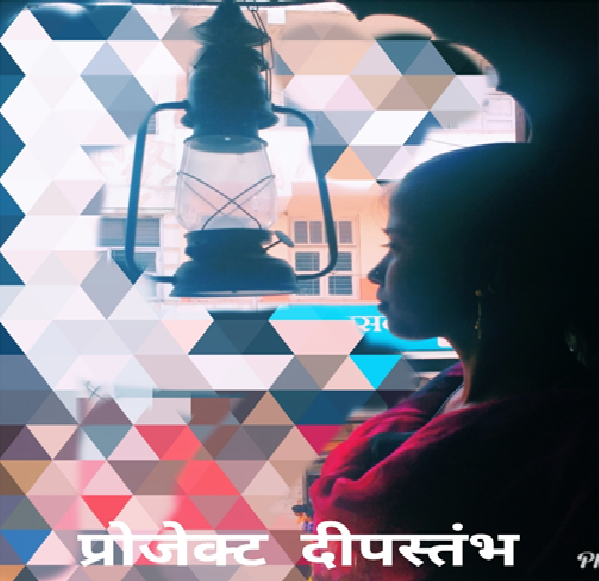
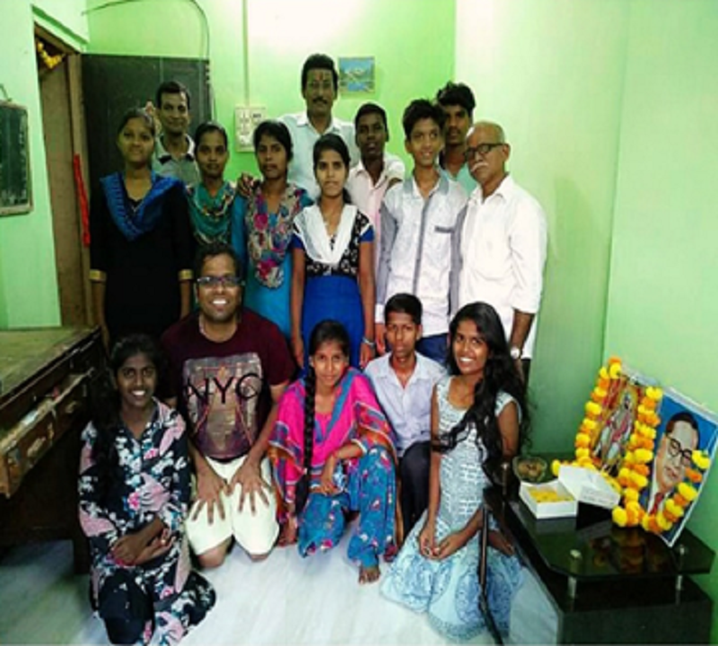
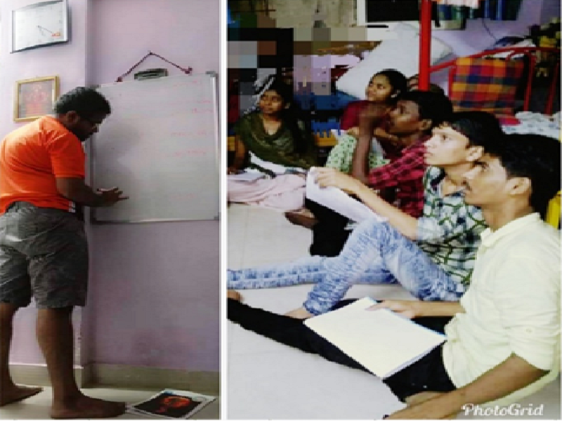
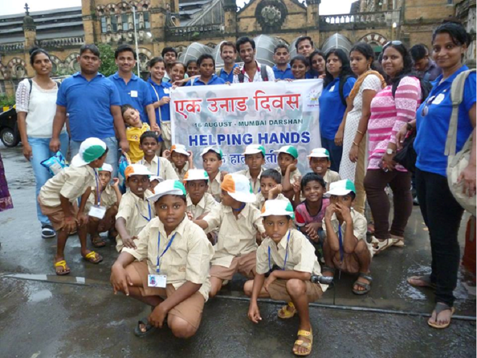
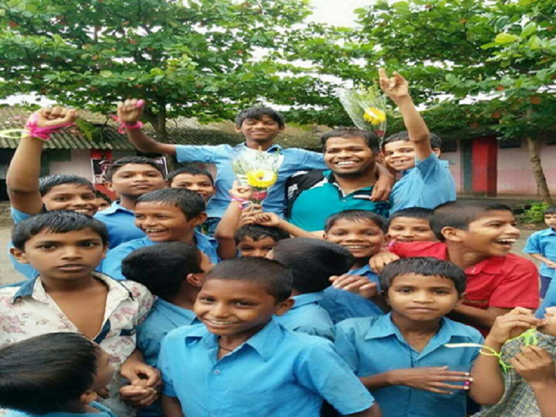
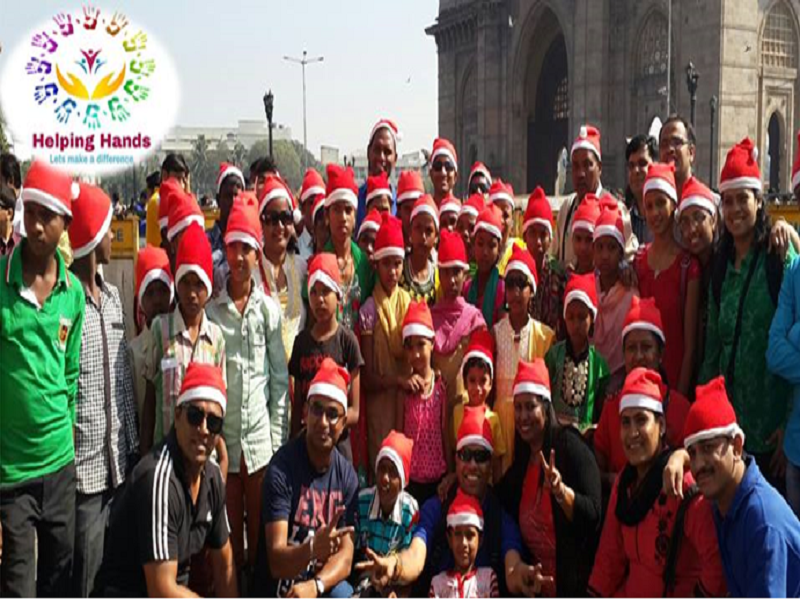
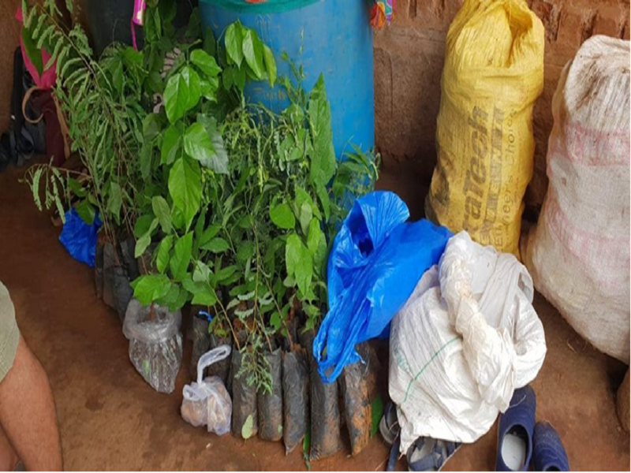
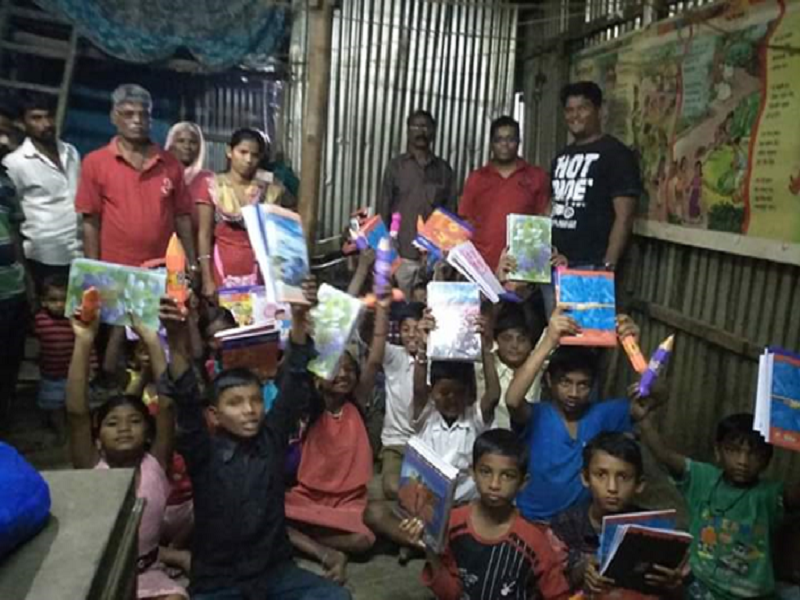
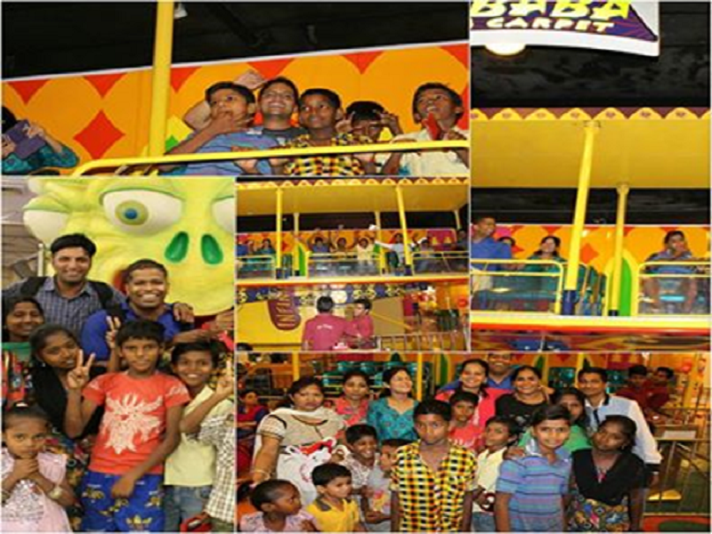
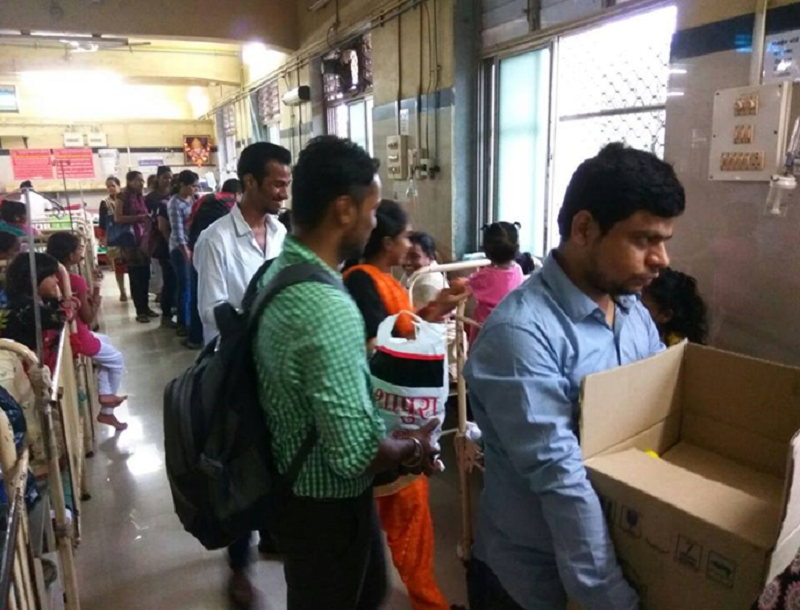

Few Words About Us
“Put Forward your Hand - Make a Difference”
Make a Difference
Helping Hand Welfare Society is a non-profit organisation with a motto to make a difference in the life of poor, needy, deprived communities by making them independent and giving them some place in the society. Till now Helping Hand has conducted 200 initiatives starting their journey with baby steps a in the year 2015, focussing on the activities in the areas involving old age homes, Orphanages, tribal areas, underpreviledged villages.
Helping Hand is not a just another institution but a group of people who want to do something productive towards society and bring smile on someone's face. Its just a start for us so those who are willing to help but not getting right medium or direction can join us.
How we started
Mr. Sameer Chavan, founder of “Helping Hands Welfare Society” as a part of his extra-curricular activity in Post-Graduation programme happened to visit Indian Cancer Society, Mumbai and it turned his life upside down. Indian Cancer Society gives shelter to underprivileged Child Cancer Patients and one of their parents. The happiness which he could spread along with his colleague in the Children enchanted him with a thought that God has given him an opportunity to make someone smile. And this gave him a push to set up the ray of hope “Helping Hands Welfare Society”. He always believed – “Money isn’t Everything; Humanity is more important”
DIPSTAMBH
Education is the most powerful weapon which you cause to change the world - Nelson Mandela
  
Many Aadivasi students are inclined towards education and they are ready to put extra efforts to avail the same. Unfortunately, Aashram Schools are not able to provide all required facilities to the students. So we decided to share little responsibility with teachers like providing stationary, additional coaching etc. which helped us change the scenario in the school in positive manner. We started this initiative in 2018. The next challenge was further studies. We started with providing them with basic amenities required, like a house in city with little furniture, grocery. While doing all this we were facing many challenges mainly financial, but with the help of well wisher could achieve the milestone. Today our 3 students successfully completed diploma and 2 students have continued further education in BE civil from Saraswati collage (2nd year). One student doing BAF course (2nd year). Our aim is to give opportunity for at least 2 students every year. We believe these students will set an example and inspire other students in there schools and villages. They will become role model for others. We want to give a hope to all that "nothing is impossible, if having a faith in dreams and being ready for hard work."
SPREADING HAPPINESS (आनंदयात्री)
Anandyatri is about adding happiness and sharing joyful moments with the people who are struggling in their lives. India is often called as the land of festivals and fairs where each day is some kind of celebration, we try to inculcate the idea of everyday celebration with these people with few of the events like
  
Ek Unad Divas
Picnics are planned for children from orphanages, slums to various places in Mumbai for them to enjoy few moments of their life. We enjoy garaba in dasara, in diwali we sing songs, play different indor games and enjoy crackers with old age people. On friendship day build a Library setup for aadivasi students to encourage them for reading.Kavita Vachan
Poetry — one of the most important and time-honored forms of literature in the world. At times very few get the required recognition required mainly due to lack of platform. We try to give them a platform we plan poetry program "Kavita Vachan" and published poetry book for upcoming poets.
Berij Vajabaki
Christopher Reeve said , “A hero is an ordinary individual who finds the strength to persevere and endure in spite of overwhelming obstacles.” We get to see many real heroes around us with encouraging stories, but not all know about them. We have made a small attempt by publishing a book “Berij Vajabaki” (with audio version) so that others can take inspirations from them.
   
Stree ek Vyaktimatva
We believe beauty is limitless because it lies in intellect, courage, vision, strength, patience, skills, versatility and so on. Women in our society are made to forget this many a times, so to remind them what they really are we took this little effort. “Beauty Contest” was organised on Women’s day to make all of them feel special.
Facts
Awards
Members
Total Events Executed
Sessions
वार्षिक अहवाल 2022
हेलपिंग हॅन्ड्स वेल्फेअर सोसायटी वार्षिक अहवाल २०२२ इथे वाचा
Gallery
Bringing smiles together
- All
- Anandyatri
- Annadan
- Dipstambh
- Garelpada

Team

Sameer Chavan
Founder
Dr. Priyanka Kamble
President
Rashmi Patil
SecretaryDonate
Name of Account : Helping Hands Welfare Society
A/c No. : 031011100002399
IFSC Code: ASBL0000031
Branch - Apna Sahakari Bank ,Dombivali
Contact
102/A,
May Flower Building
Bhamandev Mandir,
Nandivali Tekadi, Dombivli (East)
hhwsdombivli@gmail.com
+91 9819502408